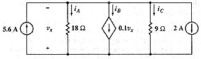

A02 DC analysis: Circuit with dependent source
Question. Given the following circuit, find currents iA, iB and iC.

Solution:
Label nodes and elements. Specially, be sure to erase the variable v1, since you'll use it to define a dependent source. Define a variable containing circuit description. I used this description:
"j56,0,1,5.6; r18,1,0,18; jd,1,0,-0.1*v1; r9,1,0,9; j2,1,0,2" à cir
The value of dependent current source is defined as -0.1*v1 because it is 0.1 times the voltage of vx, and vx=(v0-v1). Remember that v0=0.
Simulate this circuit using direct current analysis.
sq\dc(cir)
Done
Ask for currents you wish.
ir18
3.ijd
-5.4
ir9
6.
Answer: iA=3 amperes, iB= -5.4 amperes and iC=6 amperes. These are the right answers.